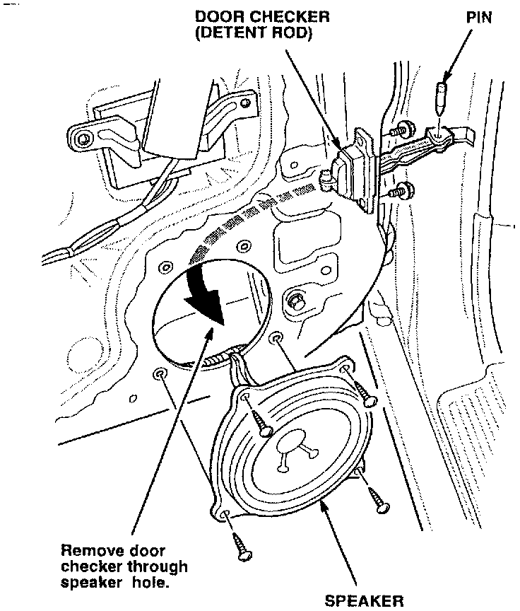

Door - Will Not Stay Open by Itself
September 24, 1996BULLETIN NO
96-038
YEAR
1994 - 96
MODEL
Integra
VIN APPLICATION
ALL Coupes
Door Will Not Stay Open by Itself
SYMPTOM
After you open the door (driver's or passenger's), it does not stay open unless you hold it.
PROBABLE CAUSE
The door checker (detent rod) is broken.
CORRECTIVE ACTION

Remove the door panel, and replace the door checker. If there are any pieces of the old checker inside the door, remove them before you reinstall the door panel.
PARTS INFORMATION
Door Checker: P/N 72340-ST7-A01
WARRANTY CLAIM INFORMATION
In warranty:
The normal warranty applies.
Operation number: 818106
Flat rate time: 0.5 hour
Failed part: P/N 72340-SK7-003
Defect code: 018
Contention code: BO1
Template ID: 96-038A
Out of warranty:
Any repair performed after warranty expiration may be eligible for goodwill consideration by the District Technical Manager or your Zone Office. You must request consideration, and get a decision, before starting work.